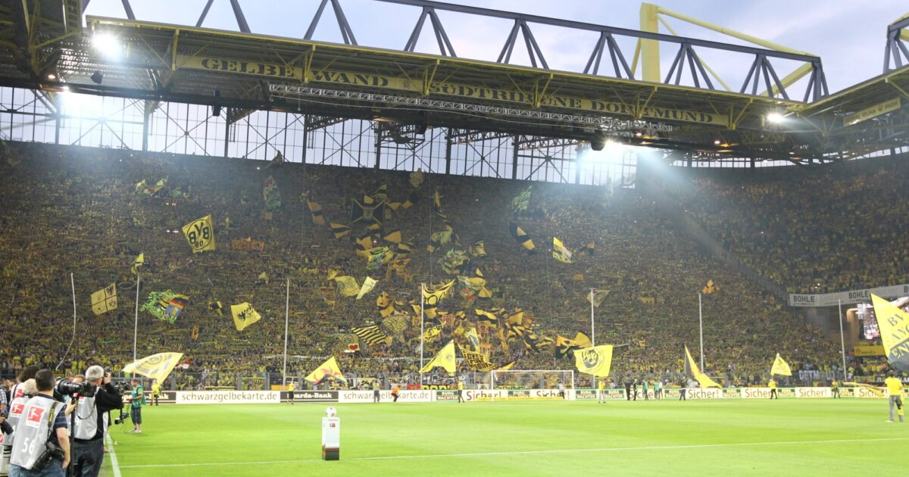

Understanding the history of a soccer stadium is crucial to fully immersing oneself in the experience of being a fan. A stadium's past tells the story of the team, its culture, and its connection with the local community. From legendary moments to tragic losses, the stadium has witnessed it all. Moreover, it serves as a source of pride for the fans and a symbol of the team's identity. By learning about the stadium's history, fans can appreciate the traditions and heritage of their club and feel a sense of connection to the past, present, and future of their team. Therefore, it is essential to delve into the history of a soccer stadium to fully enjoy and appreciate the game.
Stade Louis II (Monaco)

The Stade Louis II soccer stadium in Monaco is a remarkable sporting venue located in the heart of the tiny European principality of Monaco. The stadium was inaugurated on January 25, 1985, and it was named after Prince Louis II, who was the sovereign of Monaco from 1922 to 1949. Since its opening, the stadium has been the home ground of AS Monaco FC, one of the most successful football clubs in France.
The stadium is not only a sports venue but also a multi-purpose complex that includes a variety of other facilities such as an Olympic-sized swimming pool, a sports hall, a fitness center, and an outdoor track-and-field arena. The complex was designed by the renowned French architect Roger Taillibert, who also designed the Parc des Princes stadium in Paris and the Olympic Stadium in Montreal. The stadium's striking design features a curved roof that resembles the hull of a ship and provides shelter to the stands and the playing field.
The Stade Louis II stadium has hosted several high-profile sporting events over the years, including the UEFA Super Cup final in 1998 and the UEFA Champions League final in 1993. The stadium was also the venue for the athletics events of the 2015 European Games and the 2018 IAAF Diamond League. Apart from sporting events, the stadium has also hosted a number of concerts, including performances by rock legends like U2 and Prince.
Despite its relatively small size, the Stade Louis II stadium has become an iconic venue in the world of football and sports. Its unique design, its picturesque location, and its association with one of the most glamorous cities in the world have made it a popular destination for fans and tourists alike.
Sukru Saracoglu Stadium (Istanbul, Turkey)

Sukru Saracoglu Stadium, located in Kadikoy, Istanbul, Turkey, is the home stadium of Fenerbahce S.K. football club. It is one of the largest and most popular stadiums in Turkey with a seating capacity of over 50,000. The stadium was inaugurated in 1908 with a capacity of 5,000 and has since undergone several renovations and expansions. The stadium was named after Sukru Saracoglu, who served as the Prime Minister of Turkey from 1942 to 1946 and was also the President of Fenerbahce between 1934 and 1950.
In 1959, the stadium underwent a major renovation and expansion, increasing its capacity to over 25,000. The new stadium was inaugurated with a match between Fenerbahce and Red Star Belgrade, which Fenerbahce won 4-0. In 1999, the stadium underwent another renovation, this time increasing its capacity to over 52,000. The new stadium was inaugurated with a match between Fenerbahce and Shakhtar Donetsk, which Fenerbahce won 6-0.
Over the years, the Sukru Saracoglu Stadium has hosted numerous important matches, including the UEFA Europa League final in 2009 between Shakhtar Donetsk and Werder Bremen, which was won by Shakhtar Donetsk. The stadium has also hosted the Turkish Cup final several times, as well as several matches of the Turkish national football team. The stadium has also been the venue for many important matches between Fenerbahce and their arch-rivals Galatasaray and Besiktas.
In addition to football matches, the Sukru Saracoglu Stadium has also hosted numerous concerts and other events, including performances by international artists such as Madonna, Metallica, and U2. The stadium has also been used as a venue for political rallies and other public gatherings. Today, the Sukru Saracoglu Stadium remains one of the most iconic and beloved sporting venues in Turkey, and is an important part of the country's cultural heritage.
Arena Nationala (Bucharest, Romania)

Arena Nationala, located in Bucharest, Romania, is a modern multi-purpose stadium that has become a cultural and sports landmark in the country. Its construction started in 2008, replacing the old stadium, which was demolished in 2007. The project was completed in 2011, with a total cost of 234 million euros, making it the most expensive stadium ever built in Romania.
The stadium has a seating capacity of 55,634 and is the home of the Romanian national football team. Arena Nationala hosted the 2012 UEFA Europa League Final between Atletico Madrid and Athletic Bilbao, as well as several other international football matches. Additionally, it has also hosted various concerts, including performances by international artists such as Metallica, AC/DC, and Red Hot Chili Peppers.
One interesting fact about Arena Nationala is that it was built on the site of the old national stadium, which was inaugurated in 1953 and was the largest stadium in Europe at the time. The old stadium was the venue for important matches, such as the 1989 European Cup Final between Steaua Bucharest and AC Milan, which was won by the Romanian team on penalties.
Another interesting fact is that the design of the new stadium was inspired by the Colosseum in Rome. The stadium's circular shape and elliptical roof make it stand out in Bucharest's urban landscape, creating a unique and modern look that attracts visitors from all over the world.
Anfield Stadium (Liverpool, England)

Anfield is a soccer stadium located in Liverpool, England. It is the home ground of Liverpool Football Club, one of the most successful soccer clubs in the world. The stadium was first built in 1884 as a venue for Everton Football Club, but after a dispute with the landlord, Everton moved to a different stadium, leaving Anfield vacant. In 1892, Liverpool Football Club was founded and took over the stadium, making it their home ground. Since then, Anfield has become an iconic venue in world soccer, with a rich history of sporting achievements and cultural significance.
Throughout its history, Anfield has been renovated and expanded numerous times to accommodate the growing fan base of Liverpool Football Club. The stadium's most famous stand is the Kop, which was originally a mound of earth used for spectators to watch the game. In the 1920s, it was transformed into a standing terrace, which quickly became known as the most vocal and passionate section of the stadium. Today, the Kop is a fully seated stand that can hold over 12,000 fans and is known for its iconic pre-match anthem "You'll Never Walk Alone".
Anfield has hosted numerous historic games and events throughout its history, including several European Cup finals and FA Cup finals. In 1965, Liverpool won their first FA Cup trophy at Anfield, beating Leeds United in a thrilling final. The stadium also played a significant role in the Hillsborough disaster of 1989, when 96 Liverpool fans lost their lives in a tragic crush. Since then, Anfield has become a symbol of solidarity and remembrance for the victims and their families.
In recent years, Anfield has undergone a major renovation, with the Main Stand being expanded to accommodate over 20,000 fans. The stadium also features state-of-the-art facilities, including a museum and tour center, retail shops, and hospitality areas. Despite these changes, Anfield remains an iconic and beloved venue for Liverpool Football Club and soccer fans around the world, with a rich history and cultural significance that transcends sport.
Celtic Park (Glasgow, Scotland)

Celtic Park is a legendary soccer stadium located in the city of Glasgow, Scotland. It is the home of Celtic Football Club, one of the most successful soccer teams in Scotland. The stadium has a rich and fascinating history, and it has been the scene of many historic matches over the years. The stadium is also one of the largest in Europe, with a capacity of over 60,000 fans.
The history of Celtic Park dates back to 1887, when the stadium was first built. At that time, it was known as Parkhead, and it was a simple wooden structure with a capacity of around 40,000 fans. Over the years, the stadium has undergone many renovations and upgrades, and it has become one of the most modern and well-equipped soccer stadiums in the world. Today, it is a true icon of Scottish soccer, and it is beloved by fans all over the world.
One of the most memorable moments in the history of Celtic Park occurred in 1967, when the stadium hosted the European Cup final between Celtic and Inter Milan. This was a historic match, as it was the first time that a Scottish team had won the European Cup. The atmosphere at the stadium was electric, and the fans were ecstatic as Celtic won 2-1 in one of the greatest moments in the club's history.
In recent years, Celtic Park has continued to be a hub of activity for Scottish soccer fans. It has hosted many high-profile matches, including several Scottish Cup finals and international matches featuring the Scottish national team. The stadium is also a popular venue for concerts and other events, and it has become an important part of the cultural life of Glasgow. With its rich history, passionate fans, and modern facilities, Celtic Park is sure to continue to be one of the most iconic and beloved soccer stadiums in the world.
San Siro (Miland, Italy)

The San Siro Stadium, also known as Stadio Giuseppe Meazza, is one of the most iconic football stadiums in the world, located in the city of Milan, Italy. It was built in 1926 and has since become the home ground of two of the biggest football clubs in Italy, AC Milan and Inter Milan. The stadium was originally named after the great Italian footballer Giuseppe Meazza, who played for both AC Milan and Inter Milan in the 1930s and 1940s.
Over the years, San Siro has undergone several renovations and upgrades. In the 1950s, a second tier was added to increase the stadium's capacity, and in the 1990s, it underwent a major renovation ahead of the 1990 FIFA World Cup, which was hosted by Italy. The renovation included the construction of new stands and the installation of modern facilities.
The stadium has also hosted several major football events, including the 1965 and 1970 European Cup finals, the 1984 European Championship final, and the 2001 Champions League final. The San Siro was also a venue for the 1934 and 1990 FIFA World Cup tournaments. In addition to football, the stadium has also hosted concerts by famous musicians like Madonna, Michael Jackson, and U2.
Despite its rich history and iconic status, plans have been made to demolish the San Siro and build a new stadium in its place. The decision has been met with mixed reactions from fans and experts, with some arguing that the stadium should be preserved as a symbol of football heritage. The new stadium is expected to have a retractable roof and modern facilities, and it will be shared by AC Milan and Inter Milan, just like the San Siro.
Allianz Arena (Munich, Germany)

The Allianz Arena is a football stadium located in Munich, Germany. It was built by the joint venture of two construction companies, Hochtief AG and Alpine Bau, and was opened in May 2005. The stadium is home to two major football clubs, Bayern Munich and TSV 1860 Munich, and has a capacity of 75,000 spectators. It is one of the most technologically advanced stadiums in the world and has hosted several high-profile events, including the 2006 FIFA World Cup.
The stadium's distinctive exterior is made up of a series of diamond-shaped inflated panels, which can be illuminated with different colors to reflect the home team's colors. This unique design was created by Swiss architects Jacques Herzog and Pierre de Meuron, and it has become an iconic symbol of the city. The stadium's interior is equally impressive, with state-of-the-art facilities and excellent sightlines for spectators.
The construction of the Allianz Arena was a major engineering feat, with the complex design requiring advanced construction techniques and materials. The stadium's roof is made up of a lightweight membrane that can be inflated or deflated depending on weather conditions. The complex also features an innovative ventilation system that uses the movement of air to regulate temperature and reduce energy consumption. The construction of the stadium took three years to complete and cost over €340 million.
The Allianz Arena has hosted several important football matches, including the 2012 UEFA Champions League final, and is also used for concerts and other events. In addition to its role as a sporting and cultural landmark, the stadium has become an important part of the local economy, attracting visitors from all over the world and providing jobs for thousands of people in the area.
Santiago Bernabeu (Madrid,Spain)

The Santiago Bernabeu Stadium, located in Madrid, Spain, is the home stadium of Real Madrid, one of the most successful football clubs in the world. The stadium was named after Santiago Bernabeu, who served as Real Madrid's president for 35 years. The stadium has undergone several renovations and expansions over the years, including the most recent renovation in 2019, which modernized the stadium and increased its capacity to 81,044 seats.
The construction of the Santiago Bernabeu Stadium began in 1944 and was completed in 1947. The stadium was originally designed by the architect Luis Alemany Soler, but Santiago Bernabeu himself oversaw the final design and construction. The inaugural match was played on December 14, 1947, between Real Madrid and the Portuguese club Belenenses. The stadium was initially called the Nuevo Estadio Chamartin, but it was later renamed in honor of Santiago Bernabeu after his death in 1978.
The Santiago Bernabeu Stadium has been the venue for various international events apart from football matches. It hosted the 1982 FIFA World Cup final, where Italy emerged victorious. The stadium has also hosted other high-profile events such as the European Cup final in 1957 and the final of the UEFA Champions League in 2010. The stadium's versatility is evident in its ability to host events such as political rallies, religious gatherings, and concerts. In 1982, the stadium hosted a mass by Pope John Paul II, which was attended by over 120,000 people. Several other renowned musicians have performed at the stadium, such as Beyonce, Bon Jovi, and Rihanna. The Santiago Bernabeu Stadium has become an essential part of Madrid's cultural and social life and a popular tourist destination.
In addition to hosting football matches and concerts, the Santiago Bernabeu Stadium has also been used as a venue for other events, such as political rallies and religious gatherings. The stadium is not only a symbol of Real Madrid's success but also an iconic landmark of Madrid and Spain. It has become a popular tourist destination, with visitors from all over the world coming to see the home of one of the most successful football clubs in history.
Signal Iduna Park (Dortmund, Germnay)

Signal Iduna Park, also known as Westfalenstadion, is a soccer stadium located in Dortmund, Germany. It was originally built in 1974, but underwent several renovations over the years to become the state-of-the-art stadium it is today. The stadium is the home of Borussia Dortmund, one of the most successful soccer clubs in Germany, and has become an iconic landmark for soccer fans around the world.
One of the most memorable moments in Signal Iduna Park's history occurred during the 1997 UEFA Champions League final. Borussia Dortmund faced Juventus in a tense match that ended in a 3-1 victory for Dortmund. The victory was a major achievement for the club and the city of Dortmund, and is still celebrated by fans to this day. The stadium's capacity at that time was just under 55,000, and it was filled to the brim with fans who were all eager to witness the historic moment.
In 2006, the stadium underwent a major renovation that increased its capacity to 81,365, making it the largest stadium in Germany at the time. The renovation also included the installation of a new roof, a state-of-the-art sound system, and improved seating arrangements. The renovation was completed just in time for the 2006 FIFA World Cup, which was hosted by Germany.
Today, Signal Iduna Park is one of the most recognizable soccer stadiums in the world, and is considered by many to be a symbol of German soccer culture. The stadium regularly hosts important soccer matches, including Bundesliga matches, international friendlies, and the occasional concert or other event. Despite its impressive size, the stadium is known for its intimate atmosphere and its passionate fans, who create an unforgettable experience for anyone lucky enough to witness a match there.
Old Trafford (Manchester, England)

Old Trafford, the iconic soccer stadium located in the city of Manchester, England, is the home ground of the world-renowned Manchester United football club. The stadium was originally built in 1910, replacing the club's previous ground at Bank Street, and was designed by the architect Archibald Leitch. The stadium has undergone several renovations and expansions over the years, with the most significant being the extensive redevelopment project in the 1990s.
The stadium has been the site of many historic moments in the sport of football. In 1958, tragedy struck when a plane carrying the Manchester United team crashed after takeoff, killing several players and staff members. The disaster, known as the Munich air disaster, had a profound impact on the club and the city of Manchester. In the years that followed, the team rebuilt and went on to achieve great success, including winning the European Cup at Old Trafford in 1968.
Old Trafford has also been a regular host of major international football events. In 1966, the stadium hosted several matches during the FIFA World Cup, including the semi-final between Portugal and England. The stadium has also hosted several UEFA Champions League finals, including the historic 1999 final between Manchester United and Bayern Munich, in which United scored two late goals to win the match and complete a historic treble.
Today, Old Trafford is one of the most iconic and recognizable stadiums in the world of football. The stadium's capacity has grown over the years and now holds over 76,000 fans. It is widely regarded as one of the premier football venues in the world, and continues to be a symbol of Manchester United's rich history and tradition in the sport of football.
Camp Nou (Barcelona, Spain)

Camp Nou, located in Barcelona, Spain, is one of the most famous soccer stadiums in the world. The stadium was built in 1957 to replace the old stadium, Les Corts, and it has been home to FC Barcelona ever since. The stadium has a capacity of 99,354, making it the largest soccer stadium in Europe and the third-largest in the world.
Camp Nou has hosted many memorable soccer matches, including the 1982 FIFA World Cup and the 1992 Summer Olympics. The stadium has also been the site of numerous high-profile soccer games, including the UEFA Champions League final, which was held there in 1989, 1999, 2006, and 2021.
Over the years, Camp Nou has undergone several renovations to keep up with modern standards. In 1982, a new roof was added to the stadium to protect fans from the rain. In 1994, the stadium underwent major renovations to increase its capacity and improve its facilities. In 2019, the stadium underwent another renovation, which included the installation of a new lighting system and a new playing surface.
Aside from its impressive size and rich history, Camp Nou is also known for its unique design. The stadium features a distinctive bowl shape, which creates an intimate and electric atmosphere for fans. The stadium also has a large mural of the FC Barcelona crest, which is visible from all angles of the stadium. Today, Camp Nou is one of the most iconic soccer stadiums in the world, attracting fans from all over the globe to witness the magic of the beautiful game.
Wembley Stadium (London, England)

Wembley Stadium is a historic sports and entertainment venue located in the Wembley area of London, England. Originally opened in 1923 as the Empire Stadium, it was built to serve as the centerpiece of the British Empire Exhibition. It quickly became known as one of the world's premier football stadiums, hosting many iconic moments in British football history. One such moment was the 1966 FIFA World Cup final, in which England famously defeated West Germany to claim the trophy. The stadium also hosted the final of the European Cup (now known as the UEFA Champions League) numerous times throughout the 1970s and 1980s.
In 2002, the original Wembley Stadium was demolished to make way for a new, state-of-the-art facility. The new stadium opened in 2007 and is now known as the Wembley Stadium connected by EE, due to a sponsorship agreement. The new stadium features a retractable roof, allowing events to take place rain or shine. In addition to hosting football matches, the stadium has also played host to numerous other events, including concerts by some of the world's biggest musical acts, such as U2, Beyoncé, and Adele.
Despite its modern amenities, Wembley Stadium remains steeped in history and tradition. The stadium's iconic Twin Towers, which were part of the original structure, were preserved and are now featured prominently on the new stadium's exterior. The stadium also features a statue of Bobby Moore, the captain of the 1966 England team, as well as a statue of England's all-time leading scorer, Bobby Charlton. In addition, the stadium has been designated as the home of English football, hosting all of the national team's home matches and serving as the site of the FA Cup final.
Overall, Wembley Stadium is a beloved landmark that has played a major role in British sports and cultural history. From hosting some of the world's biggest sporting events to showcasing the talents of some of the biggest musical acts of all time, Wembley Stadium remains a source of pride for the people of London and the United Kingdom as a whole.